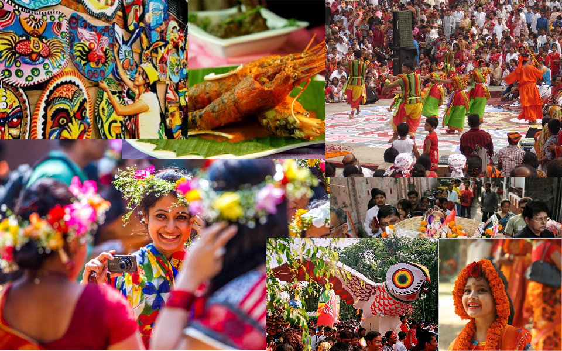
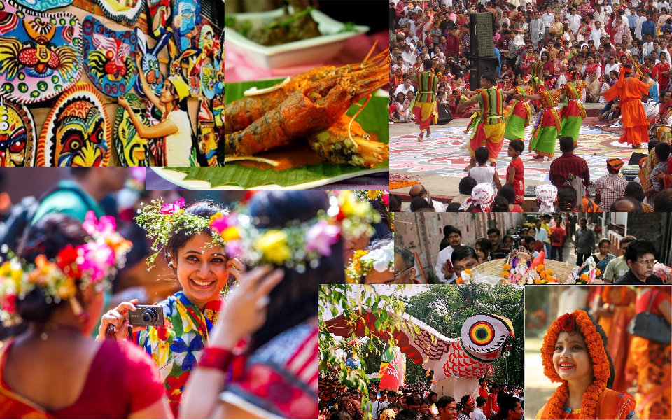

West bengal is a state in the eastern region of India along the Bay of Bengal. With over 91 million inhabitants (as of 2011), it is India's fourth-most populous state. West Bengal is the thirteenth-largest Indian state, with an area of 88,752 km2 (34,267 sq mi). Part of the ethno-linguistic Bengal region of the Indian subcontinent, it borders Bangladesh in the east, and Nepal and Bhutan in the north. It also borders the Indian states of Odisha, Jharkhand, Bihar, Sikkim, and Assam. The state capital is Kolkata (Calcutta) the seventh-largest city in India, and center of the third-largest metropolitan area in the country. West Bengal includes the Darjeeling Himalayan hill region, the Ganges delta, the Rarh region, and the coastal Sundarbans. The main ethnic group is the Bengalis, with Bengali Hindus forming the demographic majority.
 

The area's early history featured a succession of Indian empires, internal squabbling, and a tussle between Hinduism and Buddhism for dominance. Ancient Bengal was the site of several major Janapadas (kingdoms), while the earliest cities date back to the Vedic period. The region was part of several ancient pan-Indian empires, including the Mauryans and Guptas. It was also a bastion of regional kingdoms. The citadel of Gauda served as the capital of the Gauda Kingdom, the Buddhist Pala Empire (8th–11th century) and Hindu Sena Empire (11th–12th century). Islam was introduced through trade with the Abbasid Caliphate, but following the early conquest of Muhammad bin Bakhtiyar Khalji and the establishment of the Delhi Sultanate, it spread across the entire Bengal region. Later, occasional Muslim raiders reinforced the process of conversion by building mosques, madrasas, and khanqahs. During the Islamic Bengal Sultanate, founded in 1352, Bengal was major trading nation in the world and was often referred by the Europeans as the richest country to trade with. It was absorbed into the Mughal Empire in 1576. Simultaneously, some parts of the region were ruled by several Hindu states, and Baro-Bhuyan landlords, and part of it was briefly overrun by the Suri Empire. The Mughal Bengal was heralded by Aurangzeb as the "paradise of the nations"